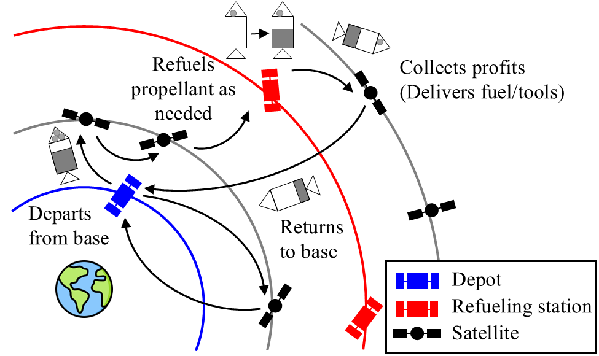
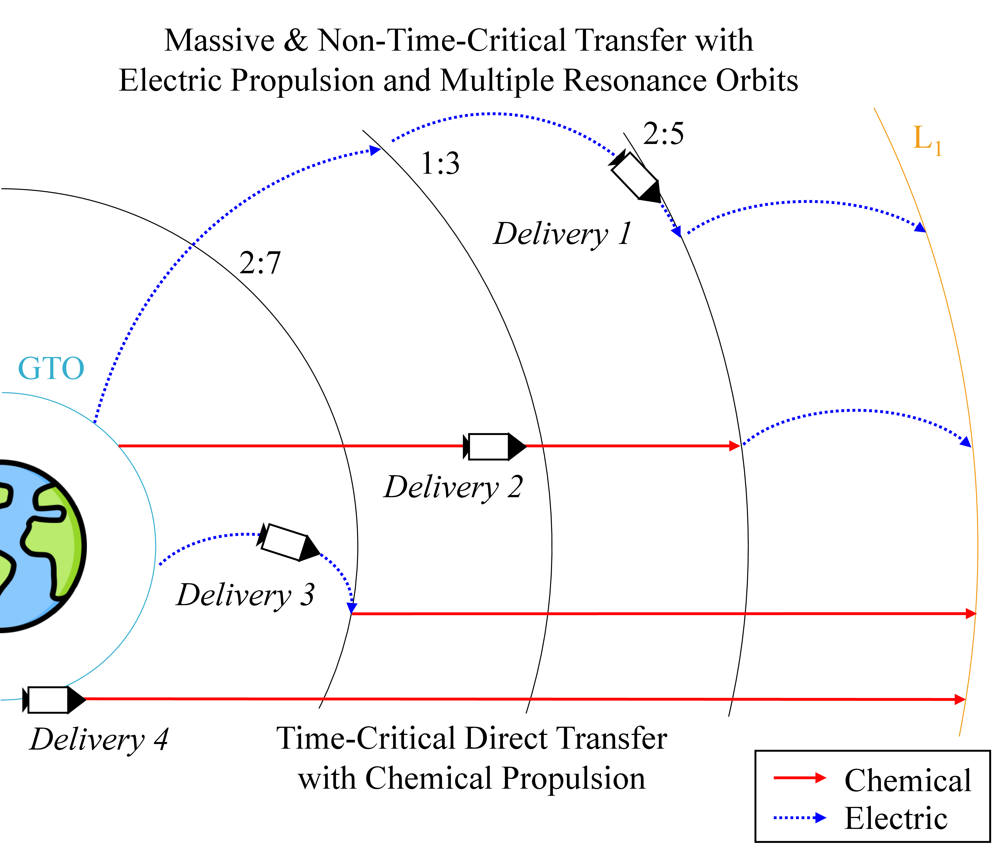
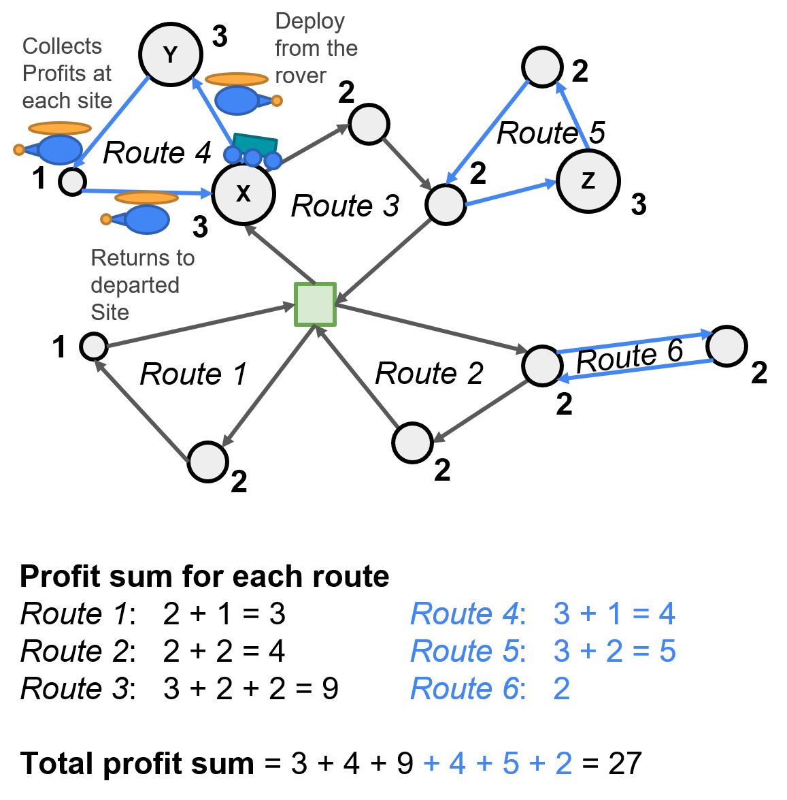
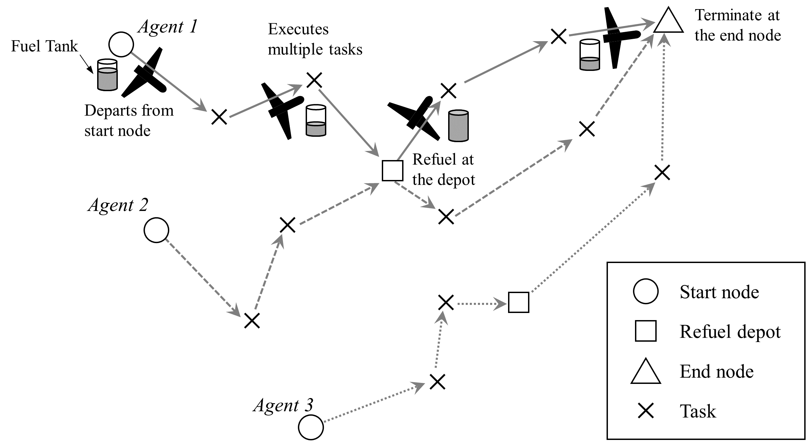
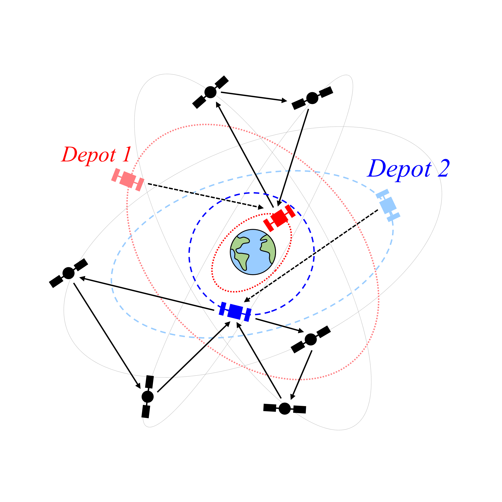
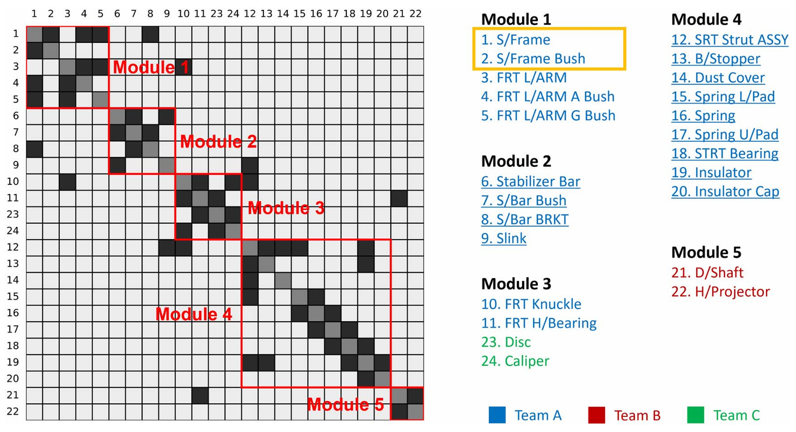

Biography
I am a Ph.D. student in Aerospace Engineering at the Georgia Institute of Technology, advised by Prof. Koki Ho. My research develops integrated decision-making frameworks for autonomous aerospace systems by connecting mission operations, multi-agent coordination, and system architecture through optimization, operations research, and aerospace domain knowledge.
Before joining Georgia Tech, I worked as a Researcher at the Aerospace Technology Research Institute within the Agency for Defense Development (ADD) in South Korea. I received my Master of Science in Aerospace Engineering, as well as a Bachelor of Science in both Aerospace Engineering and Physics (Double Major) from the Korea Advanced Institute of Science and Technology (KAIST).
My name is pronounced E-hyun ("Eui" as in the letter 'E' and "hyeon" as in 'Hyundai').
Research Vision
Education
- Ph.D. in Aerospace Engineering, Georgia Institute of Technology, expected August 2027
- M.S., Aerospace Engineering, Korea Advanced Institute of Science and Technology (KAIST), 2024
- B.S., Aerospace Engineering and Physics (Double Major), Korea Advanced Institute of Science and Technology (KAIST), 2019
Selected Publications
- E. Choi and K. Ho, "Integrated Routing and Trajectory Design for Satellite Servicing," Journal of Spacecraft and Rockets, 2026, pp. 1–15.
- E. Choi and K. Ho, "Orbital Depot Location Optimization for Satellite Constellation Servicing with Low-Thrust Transfers," Journal of Spacecraft and Rockets, Vol. 63, No. 1, 2026, pp.4–13.
- E. Choi and J. Ahn, "Optimal Planetary Surface Exploration with Heterogeneous Agents," Journal of Spacecraft and Rockets, Vol. 60, No. 4, 2023, pp. 1343–1354.
Research Overview
My research develops integrated decision-making frameworks for autonomous aerospace systems operating across air and space domains. The program connects three decision scales: how aerospace systems are operated, how autonomous agents are coordinated, and how systems and infrastructure are designed.

Research Thrusts
Core Focus: Integrated optimization of routing, scheduling, trajectory design, resource allocation, and infrastructure utilization for servicing, exploration, and space logistics.
Key Contributions:
- Integrated Spacecraft Routing and Trajectory Design: Developed arc- and path-based formulations jointly optimizing satellite selection, visiting sequences, en route refueling, and time-dependent trajectories, achieving comparable mission performance with an approximately 100-fold reduction in computation time.
- In-Situ Resource Utilization-based Mission Planning: Developed planning models for ISRU-supported surface exploration, orbital resource recycling, and cislunar transportation campaigns.
Future Directions:
- Adaptive-Fidelity Planning: Selectively refining physical models when additional detail changes mission-level decisions.
- Uncertainty-Aware Operations: Revising schedules and resource flows as demand, vehicle states, and infrastructure availability change.


Core Focus: Scalable task allocation, cooperative routing, and adaptive replanning for heterogeneous aerospace agents with interdependent capabilities, resources, and information.
Key Contributions:
- Heterogeneous Surface Exploration: Developed a two-echelon routing framework for coordinated rover-helicopter operations, increasing exploration value by an average of 149% relative to rover-only missions in the evaluated scenarios.
- Real-Time Adaptive Replanning: Co-developed a rolling-horizon framework with optimization, heuristic, and learning-based methods that generated feasible plans in under one second for tested instances with up to 100 tasks.
Future Directions:
- Cross-Domain Heterogeneous Teams: Coordinating surface, aerial, and orbital agents operating across different environments and timescales.
- Information-Aware Coordination: Quantifying when the mission value of observation, communication, and shared information justifies their costs.


Core Focus: Optimization of aerospace architecture, infrastructure, modularity, and phased deployment based on downstream operational consequences.
Key Contributions:
- Continuous Orbital Depot Location-Routing: Co-optimized continuous depot locations and satellite servicing routes, reducing effective mass to low Earth orbit by 36.9% relative to the initial depot configuration in the evaluated case study.
- Constraint-Aware Architecture Design: Developed mathematical programming methods for modular architecture design and sequential infrastructure planning under practical constraints and uncertainty.
Future Directions:
- Phased Infrastructure Deployment: Determining when to deploy, expand, or defer space infrastructure as demand evolves.
- Modular & Reconfigurable Systems: Designing interfaces that preserve future operational options while balancing lifecycle cost, risk, and adaptability.


Journal Articles
- E. Choi, J. Lee, and J. Ahn, "Optimal Split-Delivery Lunar Campaign with Resonance Orbits and Hybrid Propulsion," Journal of Spacecraft and Rockets (Accepted).
- E. Choi and J. Ahn, "Optimal Routing for In-Situ Resource Utilization-Based Planetary Surface Explorations," Journal of Aerospace Information Systems (Accepted).
- E. Choi and K. Ho, "Integrated Routing and Trajectory Design for Satellite Servicing," Journal of Spacecraft and Rockets, 2026, pp. 1–15.
- B. Gwon*, E. Choi*, J. Lee, and J. Ahn, "Adaptive Planning for Multiple UAVs with In-Flight Refueling," International Journal of Aeronautical & Space Sciences, 2026, pp. 1–19 [*These authors contributed equally].
- J. Choi, J. Lee, E. Choi, and J. Ahn, "Sequential Vertiport Location Optimization Considering Uncertain Social Benefit," Journal of Aerospace Information Systems, Vol. 23, No. 8, 2026, pp. 737–752.
- E. Choi and K. Ho, "Orbital Depot Location Optimization for Satellite Constellation Servicing with Low-Thrust Transfers," Journal of Spacecraft and Rockets, Vol. 63, No. 1, 2026, pp. 4–13.
- C. Moon, E. Choi, and J. Ahn, "Aerial-Ground Collaborative Routing with Uncertain Exploration Value," International Journal of Aeronautical & Space Sciences, Vol. 26, 2025, pp. 2817–2841.
- J. Kim, E. Choi, J. Ahn, E.S. Suh, J. Kim, and D.G. Lim, "Mathematical Programming-Based Design Structure Matrix Clustering for Modular Architecture Design," Journal of Mechanical Design, Vol. 147, No. 10, 2025, 101401.
- E. Choi and J. Ahn, "Optimal Multi-agent Grouping and Routing with Cooperative Tasks," Journal of Aerospace Information Systems, Vol. 22, No. 3, 2025, pp. 163–176.
- E. Choi and W. Chang, "Multi-Agent Task Allocation with Inter-Agent Distance Constraints," Journal of Aerospace Information Systems, Vol. 21, No. 2, 2024, pp. 168–177.
- E. Choi and J. Ahn, "Optimal Planetary Surface Exploration with Heterogeneous Agents," Journal of Spacecraft and Rockets, Vol. 60, No. 4, 2023, pp. 1343–1354.
- E. Choi and J. Ahn, "Optimal Planetary Surface Routing Considering Exploration Values and Synergies," Journal of Aerospace Information Systems, Vol. 19, No. 6, 2022, pp. 406–420.
Working Papers
- B. Gwon, E. Choi, and J. Ahn, "An Integer Linear Programming-Based Framework for Satellite Coverage Optimization Problem Under Operational Constraints," International Journal of Aeronautical & Space Sciences (Major Revision).
- E. Choi, J. Kim, J. Kim, J. Ahn, "Optimal Design Structure Matrix Clustering with Constraint Selections for Conflict Resolution," Journal of Mechanical Design (Under Review).
Conference Papers
- E. Choi and K. Ho, "In-Space Recycling Logistics Optimization for Circular Space Economy," 2027 AIAA SciTech Forum, January 2027 (Forthcoming).
- T. Noro, E. Choi, S. Han, M. Isaji, and K. Ho, "Optimal Scheduling of ADR Missions in the Near-GEO Region Based on a Competing-Risk Failure Model," The 70th Space Sciences and Technology Conference, November 2026 (Forthcoming).
- T. Noro, K. Ho, E. Choi, S. Han, and M. Isaji, "Low-Thrust Trajectory Optimization via Sequential Convex Programming for On-Orbit Servicing in GEO," The Japan Society for Aeronautical and Space Sciences 57th Annual Meeting, April 2026.
- E. Choi and K. Ho, "Optimal Routing and Trajectory Planning for Asteroid Mining with Partial In-Situ Resource Utilization," 2026 AIAA SciTech Forum, January 2026.
- E. Choi and J. Ahn, "Optimal Routing Problem with Precedence Constraints for Surface Exploration," 2024 AIAA SciTech Forum, January 2024.
- J. Choi, J. Lee, E. Choi and J. Ahn, "Optimizing UAM Vertiport Location in Jeju Island: Incorporating Noise for Public Utility," 2023 Asia-Pacific International Symposium on Aerospace Technology, October 2023.
- E. Choi and J. Ahn, "Optimal Short-Term Scheduling for Space Telescope in Low-Earth Orbit," 2023 AAS/AIAA Astrodynamics Specialist Conference, August 2023.
- E. Choi, D. Han, and W. Chang, "Decentralized Task Allocation for Multiple UAVs with Iterative Cost Reduction," KSAS 2023 Spring Conference, pp. 60–61, April 2023.
- J. Ahn, E. Choi and D.U. Lee, "Application of routing problems to space exploration missions," 2023 AIAA SciTech Forum, January 2023.
- W. Chang and E. Choi, "Trade-off Study on Multi-UAV Autonomous Mission Planning Algorithms," KSAS 2022 Fall Conference, pp. 1736–1737, 2022.
- E. Choi and W. Chang, "Multi-Agent Decentralized Task Allocation Algorithms with Fuel Constraints," KSAS 2021 Fall Conference, pp. 432–433, 2021.
Media Articles
- E. Choi and K. Ho, "SpaceX aims to use rockets to quickly transport cargo across the Earth and into orbit – moves that would expand the global cargo system," The Conversation, 2026.
Theses
- E. Choi, "Optimal Planetary Surface Routing Considering Synergy Value System and Heterogeneous Agents," Master's Thesis, Department of Aerospace Engineering, Korea Advanced Institute of Science and Technology, 2024.
Patents
- D. Han, W. Jang, E. Choi, "Method and apparatus for determining the path of an unmanned vehicle using a distributed network," KR Patent, 10-2946314, 2026.
Software & Tools
- T. Noro, M. Isaji, E. Choi, S. Han, and K. Ho, "PosbasedOOSnearGSO.jl," Georgia Tech Software Disclosure, Invention ID 2026-248, 2025.
- T. Noro, M. Isaji, E. Choi, S. Han, and K. Ho, "LowthrustSCP.jl," Georgia Tech Software Disclosure, Invention ID 2026-247, 2025.
-
E. Choi, K. Ho, and Y. Shimane, "Continuous Location Routing Problem for Orbital Depot (CLRPOD) v1.0.0," Georgia Tech Software Disclosure, Invention ID 2026-018, 2025.
[View on GitHub]
Professional & Research Experience
- Graduate Research Assistant, Daniel Guggenheim School of Aerospace Engineering.
- Graduate Teaching Assistant, Spacecraft Flight Dynamics, Fall 2026.
- Graduate Research Assistant, Department of Aerospace Engineering.
- Researcher, Aerospace Technology Research Institute.
Selected Projects
- Innovative Decision-Making Frameworks for Next-Generation Space Systems (Mitsubishi Electric Corporation, Georgia Tech)
- ATLAS: Advancing Technologies for Logistics Architectures in Space (AFRL/AFOSR, Georgia Tech)
- Space Logistics Model for Temporary Deployment of Earth Imaging Satellites (ThinkOrbital, Georgia Tech)
Contact Information
Email: ehchoi@gatech.edu
LinkedIn: linkedin.com/in/ehchoi
Google Scholar: Euihyeon Choi
Location: Atlanta, GA, USA
Download Full CV
You can download a complete and up-to-date copy of my Curriculum Vitae in PDF format below.
📄 Download CV (PDF)